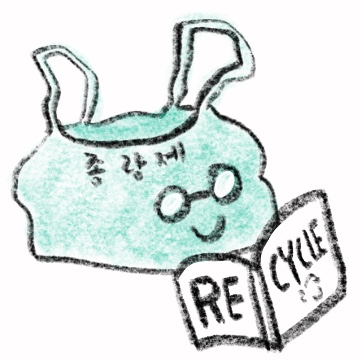

Monday, Feb 15, 2021
종량제봉투야! 전단지는 너가 수거해?
15:55

종량제봉투
맞아, 전단지는 코팅지라 일반쓰레기로 버려야 해.
15:55
아까 작은 플라스틱들이 자기들은 재활용이 안된다는데 정말이야?
15:56
종량제봉투
사실이야. 빨대나 작은 숟가락, 포크, 양념그릇 그리고 칫솔이나 장난감처럼 여러 재질이 섞인 친구들은 나와 함께 갈 애들이야.
15:56
종량제봉투
음식물이 지워지지 않는 플라스틱 용기나 종이류도 모두 재활용 대상이 아니야. 다만! 세척이 되면 재활용 해야 해!
15:56
그렇구나.. 그럼 뭘 넣으면 안돼?
15:58
종량제봉투
음식물은 음식물 쓰레기로, 라면이나 과자 봉지, 한약이나 각종 비닐봉지는 씻어서 재활용해야 하고
랩도 씻으면 재활용이 되니 종량제에 버리지 말자! 15:58
랩도 씻으면 재활용이 되니 종량제에 버리지 말자! 15:58